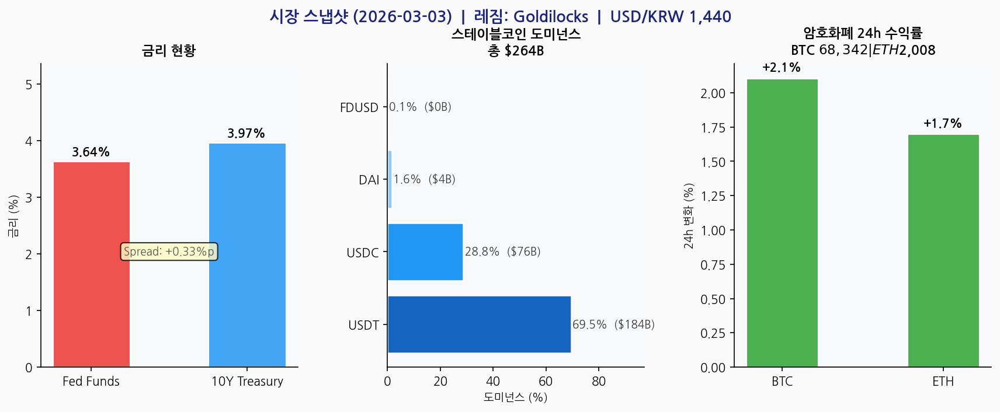
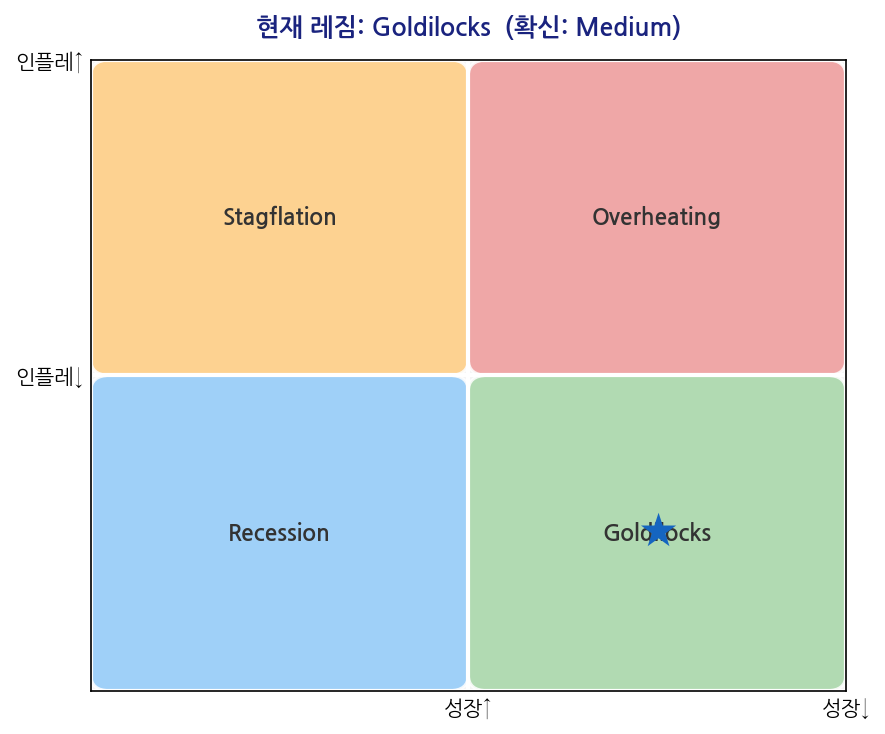
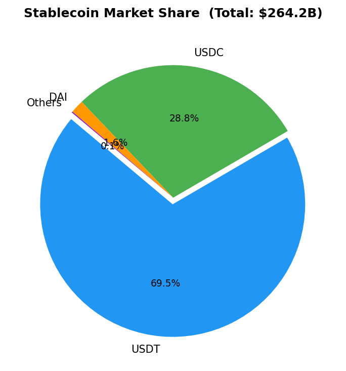
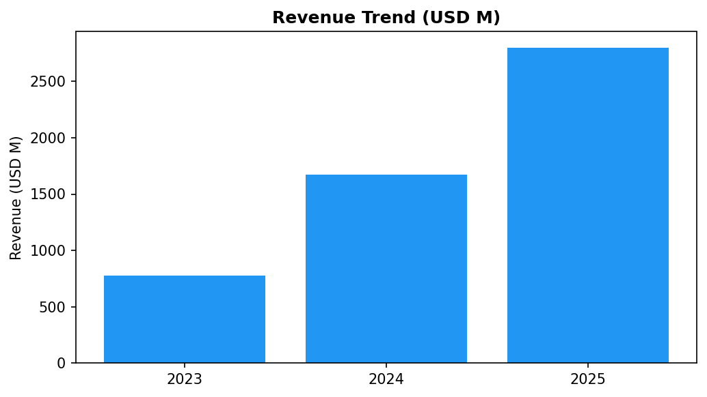

직무 적합성 3축
📐
JD 1:1 문서화
다날 공고의 핵심 업무를 그대로 `brief · IM · screen · chart` 흐름으로 옮겼습니다.
시장 동향 요약, 기업 검토 초안, 레짐 판단, 시각화까지 내부 문서 형태로 바로 읽히게 정리했습니다.
시장 동향 요약, 기업 검토 초안, 레짐 판단, 시각화까지 내부 문서 형태로 바로 읽히게 정리했습니다.
regime_report_20260306.md
im_Circle_20260306.md
📊
증거 · 반증 기반 분석
모든 수치에 출처가 있고, 모든 주장에 근거 데이터가 있습니다.
규제 비교표, 경쟁사 scorecard, 차트 4종, 시나리오 표, 모니터링 지표로 반증 가능한 분석을 남깁니다.
규제 비교표, 경쟁사 scorecard, 차트 4종, 시나리오 표, 모니터링 지표로 반증 가능한 분석을 남깁니다.
screen_stablecoin_20260306.md
outputs/charts/ (4종)
🧭
판단 운영 원칙
핵심 계산은 정형화하고, 최종 문서는 사람이 검토하기 쉽게 정리합니다.
역할 분리 harness는 유지하되, 확신도, 반론, watch point, 시니어 검토 전제를 남기는 `workflow-first` 구조로 재배치했습니다.
역할 분리 harness는 유지하되, 확신도, 반론, watch point, 시니어 검토 전제를 남기는 `workflow-first` 구조로 재배치했습니다.
AGENTS.md + spec.md
WORKFLOW_PRINCIPLES.md
주요 기능
python main.py --brief
주간 브리핑
Executive 결론 + 레짐 + 거시·디지털자산 + 뉴스 + 다날 시사점
데이터 분석
워크플로 설계
python main.py --im "Circle"
IM — Circle (글로벌)
10섹션 · ☑ 검토 · TAM/SAM/SOM · 피어비교 · Binance×Circle 협력
경제 분석력
데이터 분석
python main.py --im "토스"
IM — 토스 (국내)
10섹션 · ☑ 보류 · 경쟁 구도 · 다날 차별화 역도출
경제 분석력
데이터 분석
python main.py --screen stablecoin
섹터 스크리닝
레짐 + 규제 현황표 + 경쟁사 6개 + 다날 포지셔닝 독립 섹션
경제 분석력
데이터 분석
python main.py --analyze --report
레짐 분석 리포트
4국면 판단 + 확신도 + 반증 신호 + watch point
경제 분석력
시각화 출력 — 데이터 분석 역량

📊 시장 스냅샷 대시보드 — 금리 · 스테이블코인 · 암호화폐
데이터 분석

🎯 레짐 게이지 — Goldilocks (Medium)
경제 분석력

🥧 스테이블코인 시장점유율 — $264.2B
데이터 분석

📈 Circle 매출 추이 — IM 자동 생성
경제 분석력
리포트 샘플
📐 경제 분석력 — 레짐 분석 독립 리포트
4개 지표 수렴 → 판단 → 자산군 함의 → 다날 3축 권고 → 시나리오 확률 순서로 서술
1. 현재 레짐 판단
| 판단 근거 | 지표 | 값 | 해석 |
|---|---|---|---|
| 성장 방향 | 10Y-FF 스프레드 | +0.38%p | 수익률 곡선 정상화 → 성장 기대 |
| 인플레이션 | Fed Funds Rate | 3.64% | 완만한 하락 기조 |
| 위험선호 | BTC 24h | +3.2% | 위험자산 선호 회복 |
| 원화 | USD/KRW | 1,445.97 | 약세 → KRW SaaS 수출 유리 |
판단: Goldilocks (Medium 확신)
성장 양호 + 인플레이션 moderate → 위험선호 환경. 스테이블코인 결제 채택 확대에 적합.
4. 다날 3축 권고
| 축 | 현재 환경 영향 | 단기 권고 |
|---|---|---|
| 캐시카우 | 소비 확장 → 거래량 증가 | 현 포지션 유지, 분기 지표 모니터링 |
| KRW SaaS | 신규 계약 공략 최적 타이밍 | 은행 PoC 완료 → 입법 후 즉각 출시 준비 |
| K.ONDA / 글로벌 | 원화 약세 → 외국인 결제 수요↑ | 바이낸스 × Circle 4월 출시 KPI 선제 설정 |
5. 시나리오 분석
| Goldilocks 지속 (70%) | K.ONDA 출시 성과 가시화 → Circle IM ☑ 관심 상향 타이밍 |
| Overheating 전환 (20%) | 위험자산 선호 급감 → 채택 위축. Circle 수익성 개선 (준비금↑) |
| Recession 전환 (10%) | 캐시카우 방어적 안정. KRW SaaS 신규 계약 지연 리스크 |
⭐ Goldilocks Medium 확신
규제 프레임워크 현황
| 규제 | 지역 | 상태 | 다날 영향 |
|---|---|---|---|
| GENIUS Act | 미국 | ✅ 통과 | 달러 기준 → KRW SaaS 선례 형성 |
| MiCA | EU | ✅ 시행 중 | 해외 진출 EMT 인허가 기준 |
| 디지털자산기본법 | 한국 | 🔄 조율 중 | KRW 스테이블코인 정의 미확정 |
다날 포지셔닝
KRW 스테이블코인 SaaS
유일한 원화 수직통합. Goldilocks = SaaS 신규 계약 공략 최적 타이밍.
K.ONDA 글로벌
Binance × Circle USDC 협력 4월 출시. 외국인 결제 + KRW 정산 특허 구조.
x402 AI 결제
위험선호 환경 → AI 결제 실험 투자 우호적. 슈퍼블록 + 사하라AI 협력.
🌤 Goldilocks — 이번 주 핵심: 다날×바이낸스×Circle 협력 발표
거시경제 스냅샷 (2026-03-06)
| 지표 | 값 | WoW | 레짐 신호 |
|---|---|---|---|
| Fed Funds Rate | 3.64% | — | ↓ 하락 기조 |
| 미국 10Y 국채 | 4.02% | — | 장기금리 안정 |
| USD/KRW | 1,445.97 | — | 원화 약세 (SaaS 수출 유리) |
다날 관점 시사점
[긴급] K.ONDA 4월 출시 모니터링
바이낸스×Circle 3자 협력 2026-04 출시. 거래량·USDC 정산 볼륨 KPI 설정 필요.
KRW SaaS 로드맵 연결
K.ONDA USDC 정산 성공 → KSC 원화 스테이블코인으로 전환. 법인지갑 특허로 정산 구조 독점.
MiCA 선제 대응
EU EMT 기준 구체화 → 해외 진출 시 MiCA 준거 KRW 구조 설계 법무 검토 권고.
☑ 검토 | IM — Circle v3
작성: 2026-03-06 | 바이낸스 페이·Circle 협력 반영 | Source: Perplexity, CoinGecko, Bloomberg, 다날 보도자료
TAM/SAM/SOM
| 구분 | 규모 | 비고 |
|---|---|---|
| TAM | $10T+ | 글로벌 결제·디지털자산 (2030년 $16T) |
| SAM | $263B | 스테이블코인 전체 시총 |
| SOM | $75B (29%) | USDC 현재 시총 |
재무 실적
| 연도 | 매출(백만$) | 순이익(백만$) | YoY 성장 |
|---|---|---|---|
| 2023 | 779 | -69 | — |
| 2024 | 1,670 | +155 | +114% |
| 2025E | 2,800 | +450 | +68% |
다날 전략 연결
| ✅ 협력 현실화 | 다날 × 바이낸스 × Circle USDC 3자 협력. K.ONDA 4월 출시. |
| K.ONDA → KRW SaaS | USDC 정산 성공 시 KSC 원화 스테이블코인으로 전환 단계 |
| 재검토 기준 | K.ONDA 4월 출시 성과 확인 후 ☑ 관심 상향 판단 |
☑ 보류 | IM — 토스 (경쟁사 분석)
목적: 경쟁사 분석 → 다날 차별화 역도출 | 작성: 2026-03-06
핵심 요약
MAU 2,900만 금융 슈퍼앱. 간편결제·대출·보험·증권 통합. 스테이블코인·B2B SaaS 부재 → 다날의 진입 공백.
다날 전략 연결 (역도출)
| 스테이블코인 공백 | 토스의 KRW 스테이블코인 부재 → 다날 SaaS B2B 진입 기회 |
| 협력 가능성 | 토스 앱 × 다날 PCI 편의점 결제 연동 상호 보완 시나리오 |
| 경쟁 포인트 | 토스페이먼츠(PG) vs 다날(결제+스테이블코인) 가맹점 전략 차별화 |
프로젝트 구조 — 역량별 컬러 표시
■ 경제 분석력
■ 데이터 분석 시각
■ 워크플로 설계
danal-research/ ├── AGENTS.md 하니스 아키텍처 + Skill Activation Map ← 워크플로/품질 게이트 설계 문서 ├── spec.md 방법론 원천 (워크플로·레짐·출처 표준) ← 경제 분석력 기준 ├── WORKFLOW_PRINCIPLES.md 분석 운영 원칙 + confidence/watch point 메모 ├── CLAUDE.md / INTENT.md 세션 규칙 + 불변 원칙 ├── portfolio-plan.md 포트폴리오 전략 + 구현 계획 + Todo ├── main.py │ ├── src/ │ ├── collect.py FRED(금리·환율) + CoinGecko + Perplexity ← 경제 데이터 수집 │ ├── research.py 기업 리서치 (IM 10섹션 재료) │ ├── analyze.py 레짐 판단 (4국면 프레임) ← 경제 분석력 핵심 │ ├── report.py Markdown 리포트 생성 ← 설득 구조화 │ └── chart.py 시각화 4종 (pie·trend·regime_gauge·dashboard) ← 데이터 시각화 │ ├── .claude/ │ ├── agents/ 역할 분리 하니스 ← 워크플로 보조 장치 │ │ ├── danal-lead.md 조율 Hub │ │ ├── research-agent.md IM 리서치 │ │ ├── collect-agent.md 데이터 수집 │ │ ├── macro-analyst.md 레짐 분석 │ │ └── sanity-checker.md 품질 4-Gate (None·포맷·출처·다날함의) │ ├── commands/ Step+Gate 워크플로 슬래시 명령 │ │ ├── brief.md / im.md / screen.md │ ├── skills/ 도메인 지식 자동 주입 │ │ ├── danal-context/SKILL.md 파트너십·재무·경쟁 포지션 │ │ ├── im-draft/references/ IM 섹션별 상세 기준 │ │ └── stablecoin-market· weekly-brief │ └── settings.json Hooks (API 키·경로·완성도 검증) │ ├── agents/contracts.json 역할·계약 선언 (v1.1.0) │ └── outputs/ ├── reports/ │ ├── regime_report_20260306.md 경제 분석력 ★★★ │ ├── im_Circle_20260306.md 경제 분석력 + 데이터 시각 ★★★ │ ├── screen_stablecoin_20260306.md 데이터 분석 시각 ★★★ │ ├── im_토스_20260306.md │ └── brief_20260306.md └── charts/ 데이터 시각화 ★★★ ├── macro_dashboard· regime_gauge· stablecoin_pie· revenue_trend 참조: pm-skills · claude-code-best-practice · tech-digest (2026 Best Practice)